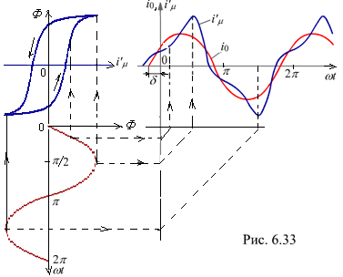

6.4.2.1. Ток катушки со сталью при синусоидальном напряжении питания
В реальной катушке со сталью форма намагничивающего тока зависит от ширины петли гистерезиса и от степени насыщения ферромагнитного сердечника.
 Как отмечалось, при приложенном к катушке со сталью синусоидального напряжения формируется синусоидальный магнитный поток Ф. При узкой петле гистерезиса и небольшой магнитной индукции в магнитопроводе (скажем, менее 0,6 Тл) форма тока в катушке близка к синусоидальной. Однако при широкой петле гистерезиса Ф(i'm) при синусоидальном магнитном потоке ток i'm в катушке периодический, но не синусоидальный: отличие формы кривой тока от синусоиды возрастает с увеличением степени насыщения магнитопровода.
На рис. 6.33 приведены построения, по которым определяются токи i'm для каждого мгновенного значения магнитного потока Ф при данном графике зависимости Ф = f(i'm). Кривая тока i'm = f(wt) строится путём нахождения значений тока для различных значений потока Ф в соответствующие моменты времени wtk, как это показано на рис. 6.33. Соединяя найденные из построения точки, получим кривую изменения тока во времени. Кривая тока несинусоидальна; при этом ток проходит через нуль раньше, чем поток, т. е. поток Ф отстаёт по фазе от тока. Это обусловлено гистерезисом; вихревые токи, индуктированные в магнитопроводе, вызывают ещё большее отставание по фазе переменного потока Ф от тока i'm.